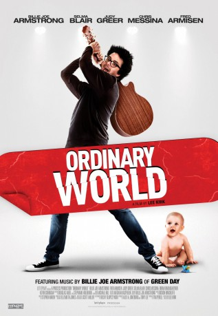
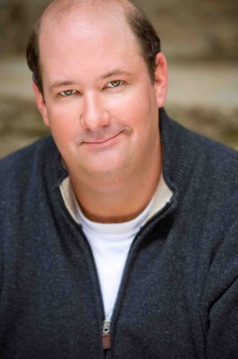

#4956 Ordinary World - Eine ganz normale Rockstar-Welt
Alternativ: Ordinary World
 
 IMDB-Wertung: 6.1 / 10
IMDB-Wertung: 6.1 / 10  Metascore: 0
Metascore: 0 
The mid-life crisis of a husband and father who, on his 40th birthday, decides to revisit his punk-rock past by throwing an extravagant party in the presidential suite of the Drake Hotel - where he encounters his beautiful ex-girlfriend and former bandmates who have since moved on to bigger and better things.
Jahr: 2016
Dauer: 87 Minuten
FSK:
Land: USA Studio: Universal PicturesTonspuren: DTS - ,
Untertitel: Deutsch,
Auflösung: 1080p (1920x1080) Größe: 4556 MB
Genre: Drama, Musik, Komödie
Regisseur: Lee Kirk
Drehbuch: Ajala Bandele
Soundtrack:
Darsteller:
- Billie Joe Armstrong als Perry
 Selma Blair als Karen
Selma Blair als Karen Judy Greer als Christy
Judy Greer als Christy- Madisyn Shipman als Salome
 Dallas Roberts als Mickey
Dallas Roberts als Mickey Chris Messina als Jake
Chris Messina als Jake Fred Armisen als Gary
Fred Armisen als Gary John Doman als Walt
John Doman als Walt- Mia Dillon als Joan
-  Brian Baumgartner als Rupert
 Sean Gunn als Ted
Sean Gunn als Ted- Valentine Miele als Joe
 Kevin Corrigan als Pete
Kevin Corrigan als Pete- Rick Younger als Dean
 Lucas Papaelias als Johnny
Lucas Papaelias als Johnny Ron Simons als Drew
Ron Simons als Drew Rebecca Naomi Jones als Gypsy
Rebecca Naomi Jones als Gypsy- Michael Angeloe als Talent Show Kid
- Kelly Ann Barrett als Christy's Assistant
 Tommy Bayiokos als Rupert's Hotel Security
Tommy Bayiokos als Rupert's Hotel Security- Andrew Call als Newt
- Stephanie Damiano als Punk Rocker
 Michael Devine als Cop
Michael Devine als Cop- Mason Fleisher als Max
- Michelle Gunn als Teacher
- Meghan Gutierrez als Student
- Shannon Harrington als Private School Girl
- Joan Jett als Herself
- Brenda Kuciemba als Hotel Guest
 Amelie McKendry als Hotel Guest
Amelie McKendry als Hotel Guest Kresh Novakovic als Steven the Waiter
Kresh Novakovic als Steven the Waiter- Eoghan Sweeney als Simon
- Liam Sweeney als Simon
 Nancy Ticotin als Denise
Nancy Ticotin als Denise- Raquel Wallace als Salome Double
- Kathleen Wilce als Hotel guest
- Ashley Brooke als Schoolgirl , uncredited
- Rufus Collins als Irate Man
- Sandra Familia als Waitress
- Aidan Farragher als Kurt Cobain
- Sabrina Starr Foley als Part Goer
- Andy Grotelueschen als Ace
- Don Guillory als Sweeney
- Vanja Jeftic als Punk Rocker
- Phil Oddo als Grandparent
- Susan Slotoroff als Joan Jett Fan
- Rose Wartell als Dancer
Datei: X:\2016(N-Z)\Ordinary World - Eine ganz normale Rockstar-Welt (2016, FSK, 1920x1080).mkv seit 05.12.2016
Festplatte: HD 2016(A-Z)
 Es gibt insgesamt 182 Filme in der Gruppe '2016(N-Z)'
Es gibt insgesamt 182 Filme in der Gruppe '2016(N-Z)'